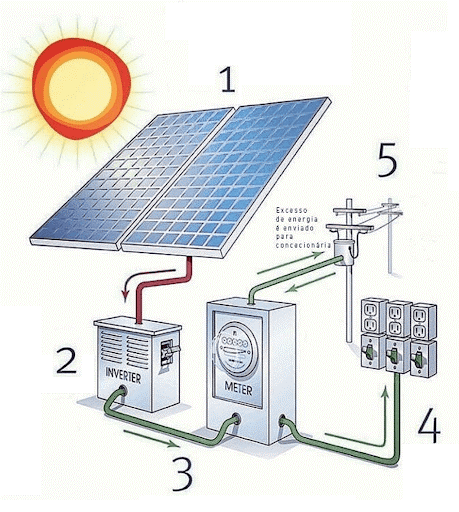

Neste trabalho daremos ênfase na energia solar, pois ela é a base do projeto que vamos apresentar. A energia solar é captada através de painéis solares e é convertida pelo sistema fotovoltaico. Cada vez mais a energia solar está presente na vida das pessoas, já existem casas e até projetos movidos à energia solar. Basicamente a energia solar fotovoltaica ocorre quando os fótons (partículas de luz) colidem com o silício que está presente no painel solar, gerando uma locomoção dos elétrons, assim criando uma corrente elétrica que denomina energia solar fotovoltaica.
Na imagem abaixo podemos ver como funciona este esquema citado a cima
